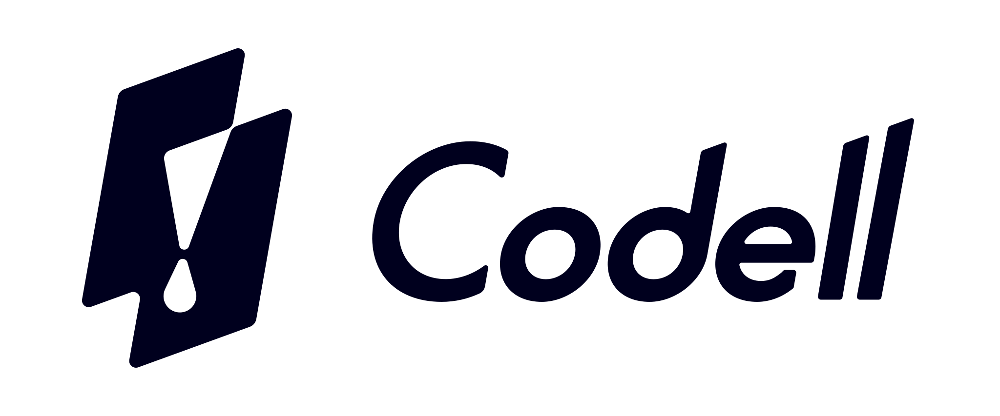
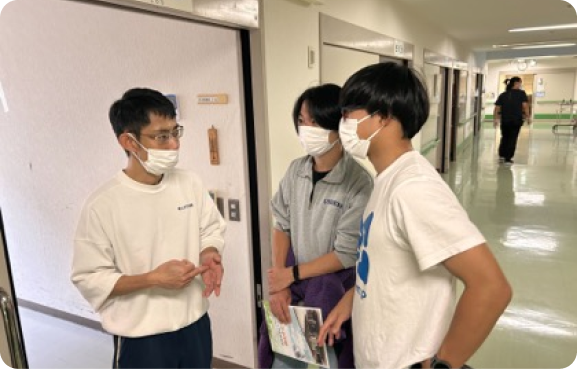
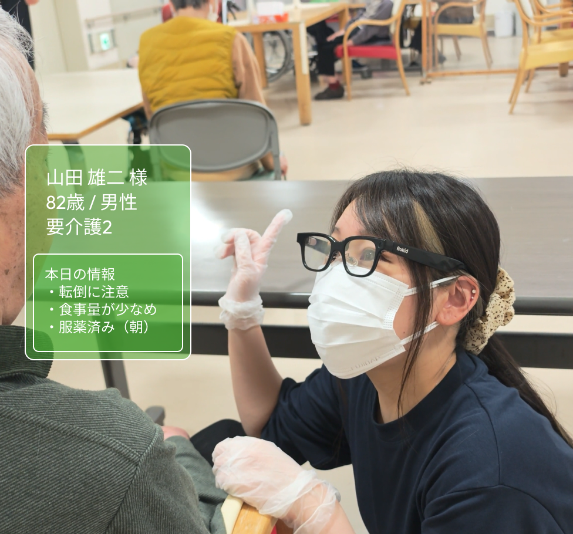
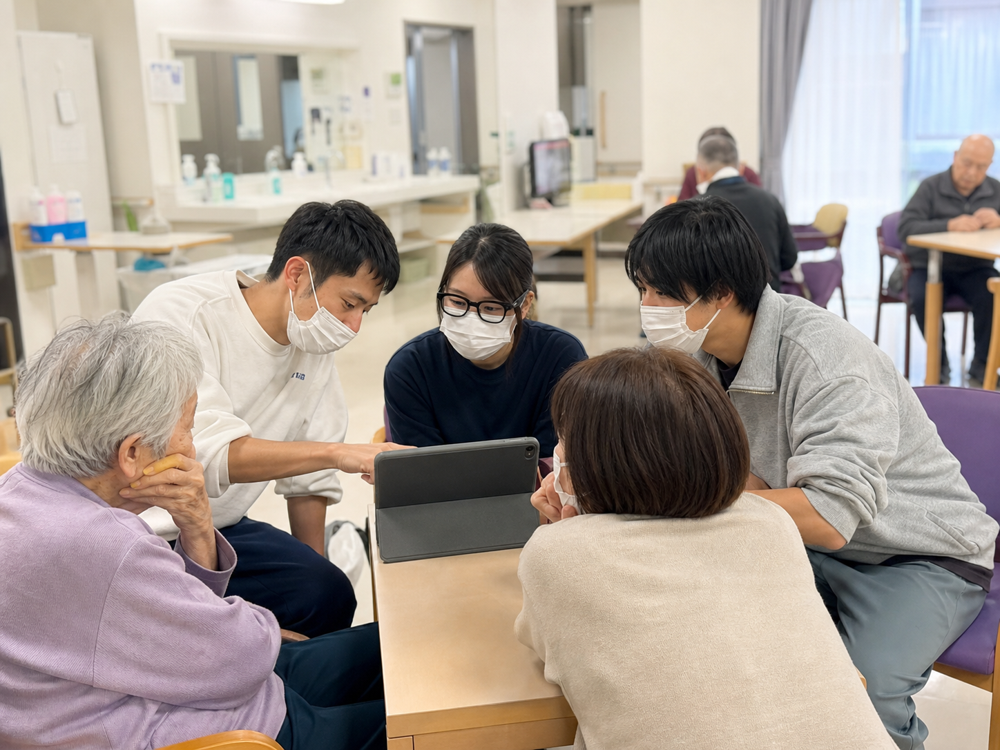
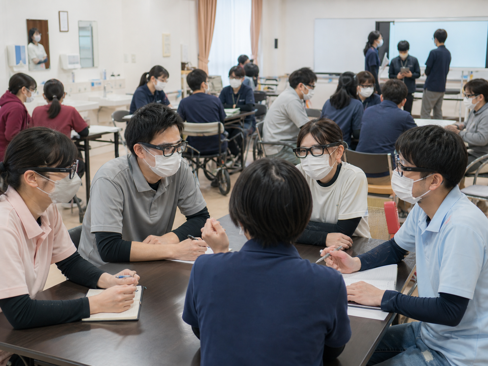
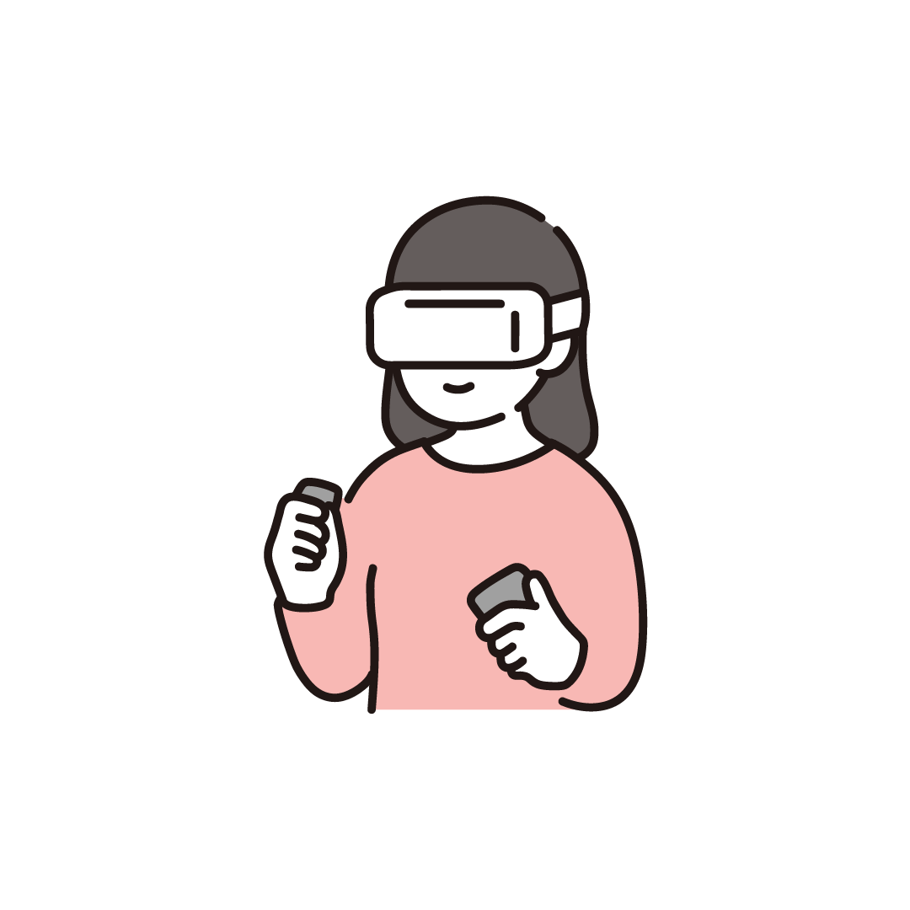
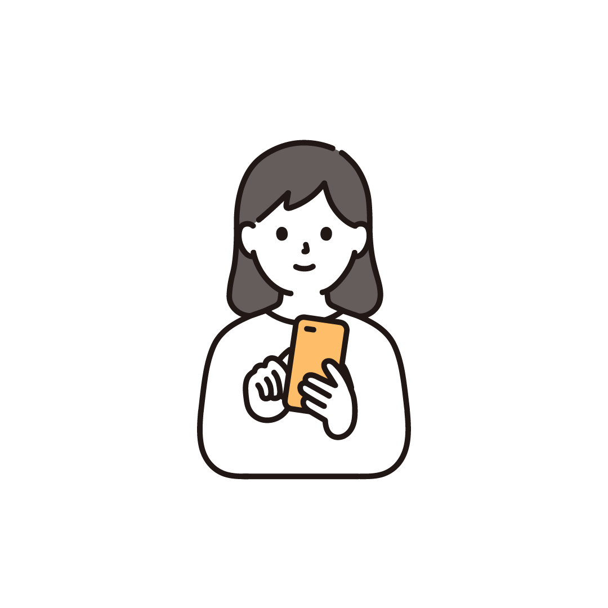
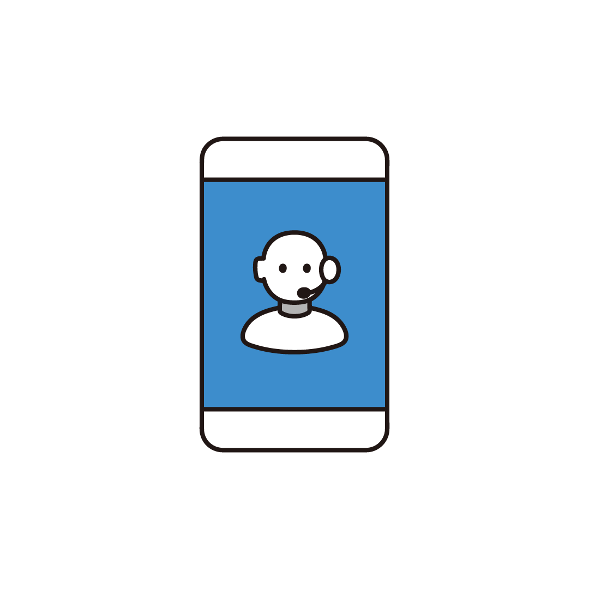

課題を聞き切る
業務の背景、制約、現場の迷いまで深く整理します。まだ言葉になっていない違和感から、変革の起点を見つけます。

What We Do
Codellは、
業界を変える
サービスの開発
を行う会社です。
私たちは、すべての会社に、「業界を変える起点となるような課題」が隠れていると考えます。その業界変革の種火を、御社の業界ノウハウと、Codellの技術力で業界全体に広げます。
Our Process




業務の背景、制約、現場の迷いまで深く整理します。まだ言葉になっていない違和感から、変革の起点を見つけます。
プロセス 1 / 4：課題を聞き切る
Work
ARアプリ、スマホアプリ、AI開発を通じて、現場や業界の課題を実際に使われるプロダクトへ変えます。
ARグラスなどのスマートデバイスを、現場に実装できます。ハンズフリーの情報端末で、スマホやタブレットが適さない現場でも活躍できます。

業務改善に寄与する専用アプリの開発が可能です。アプリを公開し、関連企業やグループ企業へ簡単に提供できます。

既存の業務ツールなどへのAI導入も検討可能です。検証から現場への導入まで、現場や業界に合わせた開発が可能です。

Product
KiDUKiは、介護現場の「気づき」を共有可能な知識へ変えるAR×AIプロダクトです。
01スカウター機能
Flagship Product
入居者の顔や状況を見たときに、必要なケア情報、注意点、申し送りをARグラス上へ表示する介護支援システムです。 ベテランの暗黙知を現場で再利用できる形にし、新人でも迷わず動ける状態を目指します。
Company